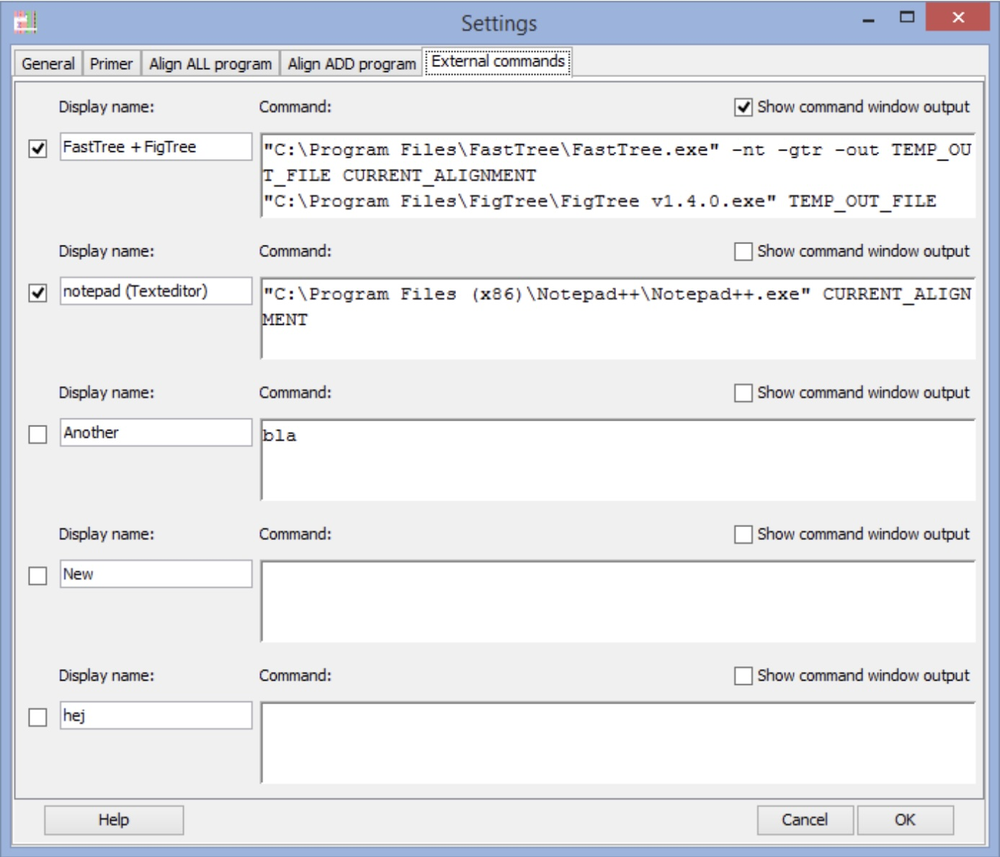
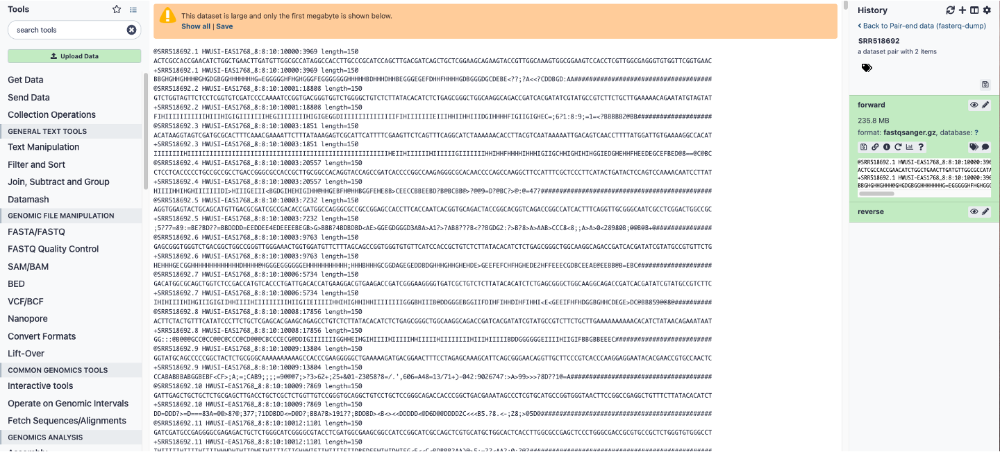

4 Genome Databases and Browsers
4.1 Genome Databases and Browsers
Genome databases and browsers form the foundation of modern bioinformatics, providing access to reference assemblies, annotations, and experimental data across thousands of species. These resources evolved from early sequence repositories like GenBank (established 1982) to sophisticated platforms integrating comparative genomics, functional annotations, and interactive visualization1. This chapter traces their historical development while emphasizing practical skills for data retrieval, sharing policies, visualization, and reproducible workflows.
Three main sites that have been responsible for storing nucleotide sequence data from 1982 to the present. These are:
- GenBank at the National Center for Biotechnology Information (NCBI) of the National Institutes of Health (NIH);
- The European Molecular Biology Laboratory (EMBL)-Bank Nucleotide Sequence Database (EMBL-Bank), part of the European Nucleotide Archive (ENA) at the European Bioinformatics Institute (EBI); and
- The DNA Database of Japan (DDBJ) at the National Institute of Genetics.
All three are coordinated by the International Nucleotide Sequence Database Collaboration (INSDC), and they share their data daily. GenBank, EMBL-Bank, and DDBJ are organized as databases within NCBI, EBI, and DDBJ which offer many dozens of other resources for the study of sequence data. GenBank exceeds 10^12 bases (2025), with daily releases.
In addition to these nucleotide sequence databases, there are three major genome portals that we will cover in this course. First, NCBI which is directly connected to GenBank. Second, is Ensembl, started before the human genome was completed with a goal of annotating genomes and providing a comparative genomic database. Third, the University of California, San Cruz (UCSC) Genome Browser which was started in 2000 concurrent with the human genome project. The latter two are heavily focused on vertebrate genomes. In addition to these three, there are several organism-specific databases. Each database and browser has unique strengths in curation, annotation depth, and visualization.
In addition to web genome browsers and databases, this chapter will introduce tools for retrieving data from databases, tools for visualizing data retrieved, and an online platform for genome analysis called “Galaxy”. Web interfaces like browsers enable exploration, while platforms like Galaxy transition to scripted workflows for scalability. Finally, this chapter concludes with a section on data sharing policies.
- Lab 3) will involve an exploratory activity to engage with three different genome databases to give a practical hands-on opportunity to explore, customize and export genome data. You will get a chance to engage with UCSC and Ensembl, as well as an organism-specific database for fruit flies.
4.2 Historical Overview
The Human Genome Project (HGP, 1990–2003) catalyzed genome database development, necessitating standardized repositories for massive sequence data. GenBank initially stored ~600 sequences; by HGP completion, it held billions of bases. Parallel efforts produced EMBL (Europe, 1980) and DDBJ (Japan, 1987) formed the International Nucleotide Sequence Database Collaboration (INSDC).
Genome browsers emerged to visualize assemblies: UCSC Genome Browser (2000) displayed the draft human genome with tracks for genes and clones. Ensembl (2000) followed, focusing on automated annotation for vertebrates. NCBI’s Map Viewer (1999) integrated genetic/physical maps. Organism-specific resources filled gaps: FlyBase (1992) for Drosophila, WormBase (2000) for C. elegans. These various browsers align data to linear chromosomes using 1-based “human-readable” coordinates (e.g. chr1:1,000,000). The display of various tracks stack hierarchically with the compression ranging from dense (blocks), to squish (arrows), to a full view of annotation features.
4.3 Major Databases
4.3.1 NCBI as a Genome Browser
NCBI is best known as the home of GenBank, RefSeq, and the Sequence Read Archive, but it also provides a full-featured genome browser called Genome Data Viewer (GDV) that sits at the center of the NCBI ecosystem. Where Ensembl is built around automated comparative annotation, NCBI’s browser is tightly integrated with RefSeq, SRA, GEO, ClinVar, and other NCBI resources, so that you can move smoothly from a gene or variant record to its precise genomic context and back again. In practice, GDV is somewhat clunkier and less visually polished than UCSC or Ensembl, but it often exposes the most up-to-date RefSeq annotations and assemblies, including patch releases and alternate haplotypes, making it a valuable default choice when you care about current reference models and NCBI’s own curation decisions.
NCBI’s older “Map Viewer” historically provided karyotype-style chromosome overviews and access to multiple map types, but this has been superseded by Genome Data Viewer and the related Comparative Genome Viewer. GDV retains the same basic idea: a high-level chromosome view that you can use to orient yourself, combined with a detailed sequence view with multiple tracks. The chromosome ideogram (or karyogram) appears as a vertical strip, with bands arranged from top to bottom, in contrast to UCSC’s default left-to-right orientation that you will encounter later in this chapter.
A typical workflow with GDV begins with choosing a species and assembly using the tree or table on the left (for example, Homo sapiens GRCh38.p14) and then either type a gene symbol, coordinate range, or variant ID into the search box to jump to your region of interest. Alternatively, if you start from either the Gene database or from a BLAST result page, there is usually a link labeled “Open in Genome Data Viewer” (or a browser icon) that sends you directly into GDV at the appropriate coordinates.
Once the browser is open to a particular locus, GDV’s main panel is divided into a Sequence Viewer region and several context widgets. The Sequence Viewer shows tracks stacked horizontally, each track corresponding to a different kind of annotation or data: RefSeq gene models, mRNA and protein alignments, dbSNP and ClinVar variants, structural variants from dbVar, expression or coverage tracks, and optionally your own custom tracks or BLAST hits. Zoom controls allow you to move from a gene-wide view down to individual exons, and the “Exon Navigator” widget provides a schematic representation of exons for the selected transcript; clicking on a particular exon in this widget updates the Sequence Viewer to center on that exon and can even open a pop-up with its genomic sequence in FASTA format. Right-click menus within tracks provide additional options, such as viewing feature details, linking back to the corresponding Gene or Nucleotide records, or copying sequence with or without flanking regions.
In the paper you were assigned last week2, they generated several novel genome assemblies. In their methods, they list the GCF accesssion id’s for their six genomes. Look up ONE of these in NCBI and open GDV. Once there, search for the antifreeze protein (AFP) gene region to look at it more closely. How does this visualization help to better understand the major findings of this study?
One of GDV’s strengths is its tight integration with other NCBI analysis tools. From within the Sequence Viewer toolbar, you can launch Primer-BLAST to design primers flanking your region, access BLAST to align a query sequence against the current assembly, or export the underlying sequence and annotation for downstream use. The “Tracks” configuration dialog allows you to add or remove NCBI-provided tracks such as dbSNP common variants, ClinVar pathogenic variants, GWAS hits, and structural variants from dbVar, as well as upload your own track files (e.g., BED or BigWig) or display data from an SRA alignment. Because GDV draws on RefSeq as its primary annotation source, the gene models you see there will usually represent NCBI’s current “official” interpretation of a gene’s structure for that assembly, and they are updated as new evidence accumulates.
For extracting data, GDV supports several levels of detail. At the most basic, you can select a genomic interval and choose “Download sequence” to obtain a FASTA file of the reference sequence for the current view. For more structured downloads, GDV links out to NCBI Datasets, a service that lets you download entire genomes, chromosomes, annotation tables, or gene sets as zipped packages via a web interface or a command-line client. You can also follow links back to the Gene or Nucleotide databases, where the same region can be exported in formats such as GenBank flat files or GFF3 for annotation pipelines. For variation analysis, clicking on individual variant markers (e.g., a SNP or structural variant in a GDV track) takes you to dbSNP, ClinVar, or dbVar records with richer metadata and allele frequency information. In this way, GDV serves both as a visualization layer and as a routing hub into the broader NCBI resource network.
In the manual gene annotation project later in the semester, you will use NCBI’s genome browser as the primary environment for building a custom gene model for an unannotated PRDM9 locus in a non-model reference genome. Starting from the appropriate assembly, you will use the Genome Data Viewer’s Sequence Viewer, exon navigation, and linked tools to identify putative exons, splice sites, and coding regions, applying basic principles of gene anatomy (start and stop codons, splice donor and acceptor motifs, reading frame continuity, and domain structure) to propose a gene model. You will then compare your proposed annotation with existing RefSeq or GenBank entries and document the evidence you used, practicing the same skills you will later apply at scale using automated pipelines.
4.3.2 Ensembl and Comparative Genomics
Ensembl is a genome browser and database that emphasizes automated annotation and comparative genomics across many species, rather than only serving as a static repository of a single reference genome3,4. Where NCBI’s RefSeq project focuses on providing a curated, largely non-redundant set of reference sequences, Ensembl’s Compara pipeline systematically compares gene and genome sequences across species to infer homology relationships, build gene trees, and identify conserved syntenic blocks. This makes Ensembl particularly useful when you are interested in questions about gene family evolution, orthologous relationships between species, or the conservation of genomic neighborhoods rather than just the annotation of a single gene in a single organism.
A central concept in Ensembl is the distinction between orthologs and paralogs. Orthologs are genes in different species that diverged through a speciation event, and they often (though not always) retain similar functions after divergence. Paralogs are genes that arose by duplication within a species (or within a lineage) and may have diverged in sequence, expression, or function as they evolve independently. Ensembl infers these relationships using gene trees: for each gene, a representative protein sequence is aligned against all other proteins, a phylogenetic tree is built, and duplication versus speciation nodes are labeled to classify relationships as orthologous or paralogous. These inferred homologies are then exposed through the web browser (e.g., “Orthologues” and “Paralogues” views), through BioMart for bulk downloads, and via programmatic interfaces.
From a practical standpoint, using Ensembl for a gene-centric analysis usually begins with the home page and the species selector. For example, to investigate the human PRDM9 gene, you would choose Homo sapiens as the species, type “PRDM9” into the search box, and follow the link to the Gene page. This gene page serves as a hub with multiple tabs (or left-hand menu entries) such as “Summary,” “Transcript table,” “Sequence,” “Variation,” and “Comparative genomics.” The summary tab provides basic information about coordinates, transcripts, protein domains, and links out to external resources like UniProt, while the comparative genomics section is where Ensembl’s strengths in cross-species analysis become particularly apparent.
Within the comparative genomics section of a gene page, the “Orthologues” view lists predicted orthologs of the selected gene across other species, often grouped into taxonomic categories such as primates, mammals, sauropsids, or teleost fish. For each ortholog, Ensembl shows the target gene ID, percent identity, coverage statistics, and an orthology type (e.g., one-to-one, one-to-many, many-to-many), which can be used to infer if a gene has been duplicated in one lineage but not another. The “Paralogues” view similarly lists duplicated copies within the focal species, providing insight into gene family expansions or subfunctionalization events. A separate “Gene tree” view displays a phylogenetic tree of the gene family, marking speciation and duplication nodes explicitly. Because these displays are driven by Ensembl’s Compara pipeline, they update as new assemblies and species are added.
Ensembl also offers synteny and whole-genome alignment views that extend comparative genomics beyond individual genes. Synteny, in this context, refers to the conserved order of genomic blocks between species; Ensembl calculates synteny from pairwise genome alignments and then displays it in a dedicated “Synteny” view. In that view, the central chromosome strip typically corresponds to your species of interest, and aligned segments in a second species are shown as colored blocks on smaller chromosome representations, indicating regions where gene order and orientation are preserved. This is particularly useful when evaluating whether a gene’s genomic neighborhood is conserved across species (syntenic orthologs) or has been rearranged, which can have implications for regulatory conservation and for interpreting complex orthology relationships that involve duplications and losses. For more fine-grained comparisons, the “Region in detail” view can be configured to display conservation tracks and pairwise or multiple genome alignments, allowing you to visually inspect conservation at the level of exons, introns, or regulatory regions.
Beyond these visualization tools, Ensembl provides several practical ways to retrieve data. Directly from the gene page, you can download DNA or protein sequences for a gene or a specific transcript in FASTA format, including flanking regions or UTRs, using the “Sequence” or “Export data” options. You can also export alignments of a gene region across multiple species as a multiple sequence alignment, which is useful for downstream phylogenetic analysis or motif discovery. For large-scale or systematic analyses, the BioMart interface (accessible via the “BioMart” link in the top navigation) allows you to build queries such as “all human genes with mouse orthologs,” “all ortholog pairs between human and zebrafish with one-to-one relationships,” or “all paralogs of a given gene family with their percent identity,” and then export results as tab-delimited tables suitable for R or Python. Programmatic access via Ensembl’s REST API and direct downloads of Compara databases provide further options for scripting and reproducible analyses, but those are beyond the scope of this chapter.
One limitation students will encounter, especially in research projects that involve non-model species or unusual gene families, is that Ensembl’s coverage of orthology relationships is incomplete and varies across taxa. Although Ensembl Genomes now includes plants, fungi, and many other clades, not all assemblies are annotated at the same depth, and not every gene has a confidently inferred ortholog in every species of interest. The PRDM9 gene provides a useful example: in humans, Ensembl offers a well-annotated PRDM9 gene with domain structure and some orthology relationships, but if you search for PRDM9 orthologs in many of the taxa used in the semester-long research project—particularly among certain fish, amphibians, or non-model vertebrates—you will find gaps, partial annotations, or missing entries. This reflects real biological phenomena, such as repeated losses and domain truncations of PRDM9 in vertebrate evolution, but it also highlights technical limitations of current annotations and the underlying assemblies. Students should therefore treat the absence of an ortholog in Ensembl with caution: it may mean that the gene was lost, that it is present but not annotated, or that it falls below Ensembl’s thresholds for confident homology prediction.
Finally, Ensembl’s automated annotation and comparative resources are most powerful when combined with a clear understanding of what kinds of data you can and cannot extract. You can reliably obtain current gene models for supported assemblies, predicted orthologs and paralogs within the scope of Ensembl’s Compara pipeline, whole-genome alignment-based conservation scores, and synteny summaries for species that have been included in pairwise or multiple alignments. You cannot expect Ensembl to provide high-quality homology relationships for species with draft or fragmented assemblies, to capture every lineage-specific gene, or to resolve highly complex gene families perfectly across all taxa.
4.3.3 UCSC Genome Browser
The UCSC Genome Browser is one of the longest-standing and most widely used genome browsers, distinguished by its rich catalogue of annotation tracks and its highly configurable display. Where NCBI’s Genome Data Viewer emphasizes tight integration with RefSeq and the broader NCBI ecosystem, UCSC focuses on flexible visualization of many independent annotation layers on top of a reference assembly. In the browser, genes, variants, regulatory elements, conservation scores, experimental datasets, and user-defined features are all represented as tracks aligned along the chromosome. You can turn tracks on and off, change their display mode and order, and save track configurations as sessions, which makes UCSC particularly powerful for exploratory work and for troubleshooting complex analysis pipelines that generate interval-based results such as BED or BigWig files.
UCSC’s main interface is organized around a horizontal chromosome view, in contrast to the vertical karyogram-style overview in NCBI’s Genome Data Viewer. After selecting a genome and assembly from the top menu (for example, Homo sapiens → GRCh38/hg38, or Drosophila melanogaster → dm6), you can search by gene name, genomic coordinates, or keyword to move to a region of interest. The top of the page shows the current coordinates and a navigational “position bar” that includes zoom and scroll controls, while the main panel displays stacked annotation tracks across this interval. Below the viewer is a long list of track groups, organized into sections such as “Mapping and Sequencing,” “Genes and Gene Predictions,” “Variation,” “Regulation,” and “Comparative Genomics,” each with individual tracks that can be set to hide, dense, squish, pack, or full display modes. These modes control the level of detail and the vertical space tracks occupy, allowing you to tailor the browser to your current question—for example, switching gene tracks to “pack” to see exon structures clearly, while showing dense conservation or variant tracks as simple stacked bars.
One of the strengths you will encounter in Lab 3 is UCSC’s suite of conservation tracks, which are particularly useful. UCSC provides multi-species alignments generated by tools like MultiZ, and from these alignments computes conservation scores such as phastCons and phyloP for each base across the genome. In the browser, the “Comparative Genomics” section includes tracks like “Conservation” and “MultiZ alignments,” which display conservation as a wiggle plot or as stacked alignment blocks between the reference and other species. When you zoom in on a gene such as rdl or dsx in D. melanogaster, turning on these conservation tracks reveals patterns such as highly conserved exons contrasted with more rapidly evolving introns and intergenic regions, or conserved noncoding elements that may correspond to regulatory sequences.
Beyond the built-in tracks, UCSC’s support for custom tracks and data hubs allows you to visualize your own analysis results directly in the browser, making it a useful companion to command-line tools like bedtools. Any dataset that can be expressed as genomic intervals or scores—classically in BED, bedGraph, BigBed, or BigWig formats—can be uploaded and displayed as a custom track on top of the reference genome. For small files, you can paste the BED content directly into the “add custom tracks” dialog or upload a file from your computer, specifying track attributes such as name, description, color, and visibility. For larger datasets, especially those hosted on a web or cloud server, you can create “track hubs” that point UCSC to remotely hosted BigBed or BigWig files; the browser streams only the portions needed for the current view, keeping interactions responsive even with gigabyte-scale datasets.
For this course, a critical connection is the interplay between bedtools-based workflows and the UCSC browser, which can make it immediately obvious whether the problem lies in coordinate conventions, strand handling, file sorting, or an upstream step. Literally “seeing” where your intervals fall along the genome makes these debugging tasks far more intuitive than staring at raw tables in a terminal.
As with Ensembl and NCBI, UCSC has limitations and design choices that you should keep in mind. The browser is optimized for a curated set of assemblies and track collections, historically biased toward human and major model organisms; while many additional species and assemblies are available, coverage and annotation depth are variable. The default gene tracks prioritize UCSC and GENCODE models, which sometimes differ in subtle ways from RefSeq or Ensembl annotations, so careful attention to which gene set you are using is essential when interpreting exon structures or designing experiments. Finally, while UCSC’s flexibility is a major strength, the sheer number of tracks and configuration options can be overwhelming initially.
4.3.4 Organism-Specific Model Organism Databases
Before the rise of today’s large, integrated portals, many community databases emerged around individual model organisms, often inspired by early efforts at The Institute for Genomic Research (TIGR). TIGR developed a suite of gene indices and repeat databases in the late 1990s and early 2000s, such as the TIGR Gene Indices and the TIGR Plant Repeat Databases, to cluster ESTs, construct consensus “virtual transcripts,” and catalog repetitive elements in key plant genomes. These TIGR resources provided some of the first species-focused, integrative views of genes, repeats, and expression data, and they helped set the pattern for organism-specific databases that tightly couple genome sequences with curated biological knowledge for a particular research community.
Over the past three decades, a number of such organism-specific databases have become indispensable anchors for model organism genetics and genomics. A non-exhaustive list of major examples includes:
FlyBase, established early 1990s, funded from 1992 by the U.S. National Human Genome Research Institute of NIH
FlyBase is the primary database for Drosophila genetics and genomics, providing curated information on genes, alleles, phenotypes, stocks, transposons, and bibliography. It integrates genome sequence data with genetic maps, expression, and mutant information, and serves as the historical record for Drosophila nomenclature and community resources.Mouse Genome Informatics (MGI), origins in late 1980s / early 1990s
MGI is the central knowledgebase for the laboratory mouse, maintained at The Jackson Laboratory. It integrates genome features, gene function, expression data, phenotypes, and human disease models, and provides standardized gene, allele, and strain nomenclature. The resource evolved from early NIH-funded efforts to merge several Jackson Laboratory databases into a single visualization and analysis system for the mouse genome.Zebrafish Information Network (ZFIN), established 1994 ZFIN is the community database for Danio rerio, the zebrafish model system. It curates genetic, genomic, and developmental data, including mutants, transgenes, markers, expression patterns, and phenotypes. ZFIN also maintains zebrafish nomenclature standards and provides links to sequence and ortholog information in other genomic resources.
WormBase, origins in the 1990s, formal web-based resource by early 2000s
WormBase began as a web interface to the ACeDB database for Caenorhabditis elegans and now covers multiple nematode species. It integrates genetic and physical maps, gene models, expression, phenotypes, and RNAi and CRISPR resources, supporting both classical genetics and high-throughput functional genomics in worms.Saccharomyces Genome Database (SGD) , established mid-1990s SGD is the primary database for the budding yeast Saccharomyces cerevisiae, providing the reference genome sequence, gene catalog, functional annotations, and curated literature for each gene. It plays a major role in biocuration, systematically extracting experimental results from the yeast literature and capturing them in structured fields.
Phytozome, launched late 2000s
Phytozome, hosted by the U.S. Department of Energy Joint Genome Institute, is a comparative genomics portal for green plants. It aggregates genome assemblies and annotations for dozens of plant species, offering orthology assignments, gene family clustering, and synteny views that support both crop improvement and basic plant biology.
In addition to these, many other community resources exist, such as PomBase for fission yeast, TAIR and Araport for Arabidopsis thaliana, Xenbase for Xenopus, and Rat Genome Database (RGD) for rat, each tailored to the needs and conventions of its respective research community. Together, these organism-specific databases encode not only sequences and annotations but also decades of accumulated experimental knowledge, nomenclature standards, and community practices that are not easily replicated in generic multi-species portals.
4.3.4.1 Funding for Organism Databases
A common thread across these databases is their reliance on sustained scientific funding, often through a mix of national research agencies and institutional support. FlyBase, for example, has historically been funded by NIH (via the National Human Genome Research Institute and related institutes) to support the Drosophila community; similar NIH or international funding supports WormBase, ZFIN, MGI, and SGD. These grants pay for database infrastructure, software development, and, critically, expert biocurators who read the literature, integrate new data types, and maintain nomenclature standards. Despite their central importance, these community databases face recurring funding uncertainties as grant cycles end, program priorities shift, and funders weigh investments in organism-specific resources against broader, centralized efforts. The long-term sustainability of some of these databases remains unclear, especially for taxa with smaller research communities or those outside the major human-health-focused models.
For researchers, however, the value of these organism-specific databases is hard to overstate. They provide deep, historically informed context that is often missing from more general resources: allele series and classic mutant phenotypes in FlyBase, detailed recombinase resources and phenotype ontologies in MGI, lineage and fate maps in ZFIN and WormBase, and exhaustive gene function summaries in SGD. These resources effectively encode the collective memory of their respective fields, linking early classical genetics papers to modern genomic datasets and making it possible to interpret new high-throughput experiments in light of decades of accumulated knowledge.
4.4 Sequence Read Archive (SRA)
The Sequence Read Archive (SRA) is NCBI’s repository for raw high-throughput sequencing data and is part of the same ecosystem as GenBank and RefSeq. Whereas GenBank focuses on assembled sequences and RefSeq on curated reference sequences, SRA stores the unprocessed reads and alignments that underlie those assemblies and publications. This design enables other researchers to reanalyze published data, test new methods, and improve genome annotations without having to regenerate the raw data themselves. Like GenBank, SRA is synchronized with partner archives at EMBL-EBI and DDBJ as part of the International Nucleotide Sequence Database Collaboration.
An SRA record is typically linked to a BioProject (study-level description), one or more BioSamples (biological sources), and then to one or more SRA runs that correspond to specific sequencing libraries or lanes. In practice, you will usually interact with SRA at the “run” level via accessions like SRR518692 (Auburn Aeromonas hydrophila sequencing), which you can download as FASTQ and then process through your own pipeline.
4.4.1 Depositing Data into SRA
For anyone with a free MyNCBI account, the web-based Submission Portal Wizard is used to deposit sequencing data into SRA. First, prepare your raw fastq files (*.fastq.gz or split based on read groups if paired), and include a basic study description (project title, abstract-like summary, organism). Next, you will need to include metadata for your sample (strain, tissue, treatment, etc.) and the sequencing runs (library information, sequencing platform, lane information, etc.). If you have a lot of samples, consider downloading the BioSample worksheet template that you can fill out locally.
Upon depsositing data, you will need to make a decision about data access. I strongly recommend making an appointment with your subject librarian. Subject librarians offer discipline-specific services designed to help Auburn University students, faculty, and staff access information resources and use them effectively. These include research consultations and discipline-specific support for using the Innovation and Research Commons (I&RC). Alternatively, you can contact the research data management librarian directly.
4.4.2 Retrieving Data from SRA (SRR518692 Example)
As an example of how to retrieve public data from SRA, let’s walk through downloading the Aeromonas hydrophila dataset SRR518692 via the NCBI web interface (manual download). First, go to the SRA home page and paste “SRR518692” into the search box and hit search. The Run page for SRR518692 shows links to the related BioProject/BioSample and basic metadata (organism, instrument, library layout). In the “Data access” or “Send to” section, look for links to either “FASTQ” via the NCBI Run Selector or “SRA file download”. Keep in mind that for this small file, you can download the compressed FASTQ directly through the browser, but for reproducible workflows and large datasets you should use the SRA Toolkit instead, which we will cover later in Lab 4.
4.4.3 SRA Toolkit for Command Line Retrieval
The SRA Toolkit is a set of command-line programs that allow you to download and convert SRA runs to FASTQ or FASTA. The two most relevant tools for this course are:
- fastq-dump: older, widely used tool to convert SRA to FASTQ (now deprecated, but still available).
- fasterq-dump: newer tool that is significantly faster and more memory-efficient, recommended by NCBI.
On HPC, always check local documentation for preferred options and scratch storage guidelines.
4.4.4 SRA Metadata and Its Evolution
SRA metadata has evolved alongside sequencing technologies and community practices, gradually moving from sparse, free-text descriptions toward more structured, machine-readable formats. Early submissions often contained minimal or inconsistent sample information, which makes reuse and integration across studies difficult, especially when key fields such as strain, host, or geographic origin are missing or encoded only in narrative text. In response, NCBI introduced structured BioSample packages with controlled fields like host, isolation_source, and collection_date, strengthened the links between SRA runs and their associated BioProject and BioSample records, and issued recommendations to rely more consistently on standard vocabularies and ontologies where possible.
Despite these improvements, the overall metadata landscape in SRA remains heterogeneous, particularly when older accessions are considered alongside newer submissions. Historical datasets may lack important fields or use idiosyncratic labels for the same concept (for example, one group might use “treatment” while another uses “condition” for similar variables), and some submitters rely heavily on file names or free-text notes to convey crucial information about experimental design, which complicates downstream harmonization. As a result, researchers reusing SRA data often need to spend substantial effort cleaning, relabeling, and normalizing metadata before they can perform robust comparative analyses across runs or projects.
For your own work, it is helpful to treat SRA metadata as part of the primary scientific output rather than an afterthought. Choosing the correct BioSample package for your experiment and filling out all recommended fields produces records that are easier for both humans and software to interpret. Consistent naming of samples across local files, lab notebooks, and SRA accessions reduces confusion later. Thoroughly documenting library preparation kits, read lengths, sequencing platforms, and any unusual processing steps both in the SRA submission and in your methods section further improves transparency and reproducibility.
When mining existing SRA datasets for reanalysis, it is wise to assume that metadata will require curation. A practical approach is to download the run table or associated metadata, normalize field names to a consistent internal schema, and explicitly check key variables such as organism, library type, read layout, and sequencing platform before combining runs into a single analysis. Older submissions, in particular, should be treated cautiously; verifying sample identities and experimental conditions by cross-referencing the associated publication, or contacting the original authors when necessary, can prevent serious misinterpretation of results. Ultimately, this variability in SRA metadata is not just an annoyance but a concrete illustration of why data literacy, careful documentation, and explicit provenance tracking are essential skills for modern genome research.
4.5 Visualizing FASTA Alignments and Tree Files
Many of the databases introduced in this chapter provide downloadable data that you can explore locally using desktop tools. At a minimum, you will frequently encounter two key file types: FASTA files, which store raw or aligned sequences, and Newick files, which encode phylogenetic trees in a plain-text parenthetical format. FASTA files can be downloaded from NCBI, Ensembl, and from organism-specific databases such as FlyBase, SGD, or Phytozome. Newick tree files are produced by many phylogenetic tools, but you can also download precomputed gene trees from Ensembl’s “Gene tree” view for individual gene families, or species timetrees from resources like TimeTree, which builds species-level divergence trees from curated literature and provides them in Newick format for downstream visualization.
A typical workflow is to obtain sequence FASTA from a genome database, generate a multiple sequence alignment locally, infer a tree using a phylogenetic software package, and then inspect the resulting Newick tree in a dedicated tree viewer. For working with alignments, I recommend AliView, a free, cross-platform alignment viewer and editor designed to handle large phylogenetic datasets efficiently5. AliView reads many of the formats you will encounter (FASTA, PHYLIP, NEXUS, etc.), renders the alignment with color schemes that highlight nucleotide or amino acid patterns, and supports basic editing operations such as trimming poorly aligned ends, removing problematic sequences, and reordering taxa.
To use AliView in a typical gene-family analysis, you would first download FASTA sequences for your gene of interest from NCBI, Ensembl, or an organism-specific database, then open them in AliView and, if necessary, pass them through an external aligner such as MAFFT (AliView can be configured to call external programs). Once an alignment has been generated and inspected, AliView can export the alignment in formats suitable for phylogenetic inference, such as FASTA or PHYLIP, which can then be used as input for tree-building software. Because AliView is lightweight and easy to install on laptops, it serves as an accessible bridge between database downloads and more advanced phylogenetic tools.
To move from an alignment to a tree, a commonly used tool is FastTree, which infers approximately maximum-likelihood phylogenetic trees for large nucleotide or protein alignments. FastTree is designed to be much faster than traditional maximum-likelihood programs while maintaining good accuracy, making it ideal for large gene families or species sets where more computationally intensive methods would be impractical. A typical command might look like running FastTree with a nucleotide alignment in FASTA format, specifying an appropriate model such as GTR for nucleotides, and writing the resulting tree to a file in Newick format. AliView includes an “external interface” feature that can be configured to send the current alignment to FastTree, wait for the program to finish, and then automatically launch a tree viewer on the resulting Newick file. In this way, you can go from a database-derived FASTA file to a tree-ready Newick file in just a few integrated steps.
For visualizing and manipulating Newick trees, the standard tool recommended here is FigTree, a graphical tree viewer and “tree figure drawing” tool designed for interactive exploration and the production of publication-ready figures. FigTree can open Newick files exported from FastTree, BEAST, RAxML, or downloaded directly from Ensembl gene trees or TimeTree species timetrees, and allows you to re-root trees, collapse or expand clades, recolor branches, and label tips or internal nodes based on metadata. A common workflow starts with a Newick tree either generated locally from a multiple sequence alignment or downloaded directly—for example, Ensembl’s gene tree for PRDM9 or a species tree from TimeTree built from a list of species names—and then uses FigTree to adjust the layout (rectangular vs. radial), annotate clades, and export vector graphics for inclusion in reports or slides. For gene trees, this allows you to interactively inspect relationships among paralogs and orthologs, compare branch lengths, and connect the patterns you see with the comparative genomics views in Ensembl and the conservation tracks in genome browsers.

AliView, FastTree, and FigTree can all be combined into a simple, semi-automated pipeline. AliView’s external command configuration supports defining custom commands that take the current alignment, pipe it to FastTree to infer a tree, and then open the resulting Newick file in FigTree. This simple integration enables the ability to move fluidly from raw sequences downloaded from NCBI, Ensembl, or model organism databases to alignments and tree visualizations that you can manipulate and interpret on your own laptop.
4.6 Galaxy as a web-based genome analysis workbench
Though not a genome broswser, this chapter would not be complete without touching on the web-based tool Galaxy. Galaxy is a web-based workbench that allows researchers to perform complex genome analyses through a browser without writing code, addressing the “informatics crisis” created by high-throughput sequencing6,7. By wrapping command-line tools in a consistent graphical interface and automatically managing compute infrastructure and file formats, Galaxy makes bioinformatics workflows accessible to experimentalists who might never log into a cluster or install analysis software8.
4.6.1 Historical development and design goals
Galaxy originated in the mid-to-late 2000s in response to the rapid expansion of microarray and next-generation sequencing data, when many biologists lacked the training or infrastructure to analyze their own data6,7. Early papers described Galaxy as a “web-based genome analysis tool for experimentalists” and emphasized a central design goal: making large-scale analyses biologist-friendly by providing a unified, web-based interface to powerful tools while hiding computational details8.
4.6.2 Doing bioinformatics in the browser
Galaxy’s analysis workspace allows users to upload their own files or import data from integrated sources, then chain tools together by passing the output of one step directly into the next, constructing multi-step workflows entirely via point-and-click interfaces6.

Galaxy analysis workspace. The Galaxy analysis workspace is where users perform genomic analyses. The workspace has four areas: the navigation bar, tool panel (left column), detail panel (middle column), and history panel (right column). The navigation bar provides links to Galaxy’s major components, including the analysis workspace, workflows, data libraries, and user repositories (histories, workflows, Pages). The tool panel lists the analysis tools and data sources available to the user. The detail panel displays interfaces for tools selected by the user. The history panel shows data and the results of analyses performed by the user, as well as automatically tracked metadata and user-generated annotations. Every action by the user generates a new history item, which can then be used in subsequent analyses, downloaded, or visualized. Galaxy’s history panel helps to facilitate reproducibility by showing provenance of data and by enabling users to extract a workflow from a history, rerun analysis steps, visualize output datasets, tag datasets for searching and grouping, and annotate steps with information about their purpose or importance. Here, a download FASTQ file is being viewed in the detail panel by simply clicking the eyeball button on the file in the history panel.
The Galaxy toolkit illustrates how basic NGS data preparation can be done entirely in the browser7. Tools such as the FASTQ Groomer, quality summary, trimmer, quality-based filters, and paired-end joiner/splitter allow users to: convert between FASTA/QUAL and all common FASTQ variants; compute per-base quality statistics and visualize them; trim low-quality ends; filter reads by length or quality; and perform complex pattern-based manipulations including reverse complementing and adapter handling7. These tasks, traditionally the domain of custom scripts, become reproducible “first steps” in a teaching-friendly, GUI-based workflow that can be reused across projects.
Beyond early QC, Galaxy supports complete analysis pipelines in many domains, including RNA-seq, ChIP-seq, variant calling, and metagenomics6. Tool wrappers encapsulate standard command-line software (e.g., mapping, peak calling, quantification) so that a novice user can execute sophisticated end-to-end workflows by selecting tools and parameters, rather than composing shell commands6.
Many Galaxy instances provide command line tools like “Faster Download and Extract Reads in FASTQ” (a wrapper for fasterq-dump) or “NCBI SRA Tools: fastq-dump”. For example, as mentioned above you retrieve the Aeromonas hydrophila dataset SRR518692 in Galaxy directly:
- Select the SRA tool in Galaxy.
- Enter SRR518692 as the accession.
- Choose “Split files” for paired-end.
- Run the job to produce FASTQ datasets directly in your Galaxy history ( Figure 4.2).
4.6.3 Reproducible workflows and provenance
A distinctive feature of Galaxy is its emphasis on reproducible computational research6. Every tool execution generates provenance metadata that include the input datasets, tool identity and version, parameter values, and resulting outputs, all stored as steps in the user’s history6. Users can inspect any intermediate dataset, rerun individual steps with modified parameters, and branch analyses by copying histories, making it straightforward to revise or expand an existing analysis.
4.6.4 Transparency, sharing, and Galaxy Pages
Galaxy also functions as a publishing medium for computational analyses6. Any dataset, history, or workflow can be shared with collaborators, made accessible via a stable URL, or published in a public repository where other users can search, view metadata, and import items into their own workspaces.6 This sharing model turns workflows into community resources and promotes convergence on best-practice pipelines.
Galaxy Pages extend this concept by documenting an entire computational experiment—from raw reads to final figures. For example, a metagenomic study of “windshield splatter” used Galaxy to build a complete NGS pipeline for phylogenetic profiling, then published a Page that exposes the full workflow and histories as an executable online supplement6. In practice, this means that a methods section and supplementary material can be instantiated as a live, executable artifact rather than static text6.
4.7 Data Sharing Policies in Genomics
Genome data sharing policies have evolved from idealistic commitments to rapid open release toward more nuanced systems that balance broad access, participant protection, and the interests of data producers9,10. This section traces that trajectory, uses the baboon genome as a case study in embargo-related bottlenecks, and offers guidance on navigating current policies across human and non‑human genomics.
4.7.1 From Bermuda to managed access
The Bermuda Principles (1996) emerged from the Human Genome Project (HGP) and mandated that publicly funded human and model-organism sequence be deposited in public databases within 24 hours, with daily pre‑publication release into the public domain9. This approach framed genomic sequence as part of a scientific commons and was explicitly justified as a way to accelerate discovery and to limit restrictive gene patenting by using rapid release as prior art.
Follow‑on statements such as the Fort Lauderdale agreement (2003) reaffirmed early deposition but added clearer expectations that downstream users respect the interests of data producers, especially large sequencing centers and consortia. These early policies were designed in an era when sequence data were mostly de‑identified, largely non‑clinical, and generated by a relatively small number of centers, which made it easier to sustain almost fully open release with only informal norms to protect the “first use” of the data by generators. This also meant that researchers largely understood the sequencing bottleneck (see Figure 1.3) and were pro-active in moving the science forward.
4.7.2 Human genomics and the medical information commons
As whole‑genome and exome sequencing became embedded in clinical care, the notion of a medical information commons (MIC) reframed genome data as one component of large, integrated resources containing genomic, phenotypic, and environmental information. Cook‑Deegan and McGuire argue that building a MIC requires going beyond Bermuda’s simple “sequence into GenBank” model toward federated systems that respect privacy, regulatory heterogeneity, and data donors’ expectations while still enabling large‑scale reuse11,12.
In the modern genome database landscape, “open” human genomic data are increasingly rare; instead, most large‑scale human datasets are subject to tiered or managed access, often governed by Data Access Committees that vet applications, require data use agreements, and sometimes impose limits on re‑identification, clinical interpretation, or re‑contact. This shift reflects: (1) recognition that genomic data are inherently identifying; (2) expansion to more diverse and often more vulnerable populations; and (3) the embedding of genomic data within linked EHRs and biobanks, making them qualitatively different from the relatively “flat” HGP sequences of the 1990s12.
4.7.3 Consortia, tiered access, and embargoes
Modern genomic consortia—spanning cancer, rare disease, population genomics, agriculture, and microbial surveillance—use a wide variety of access arrangements. Nicol, Nielsen, and Archer surveyed 98 genomic consortia and identified twelve distinct access patterns, including simple models such as open access, consortium‑only access, managed access, and registered access, plus tiered combinations such as “consortium + managed + open.” Tiered arrangements often allow: privileged access for consortium members, managed access for qualified external users, and fully open release of a summary or low‑risk subset of data10.
Funding policies encode similar logic. The NIH Genomic Data Sharing (GDS) Policy13 requires submission of large‑scale human genomic data to approved repositories (e.g., dbGaP) and typically defers broad release of controlled human data for about six months after quality control, but explicitly rejects long publication embargoes in favor of relatively rapid sharing with no formal guarantee of “first publication rights.” For non‑human genomic data, NIH expects submission no later than the time of publication, with fewer privacy constraints but similar expectations that sequence and metadata be deposited in recognized repositories.
Embargoes and “privileged access” periods remain widespread in consortia as a way to recognize the investment of data producers. The tiered access model can, in principle, honor rapid pre‑publication release while giving generating groups a limited window to publish primary analyses, but the effectiveness of this approach depends heavily on clear documentation of embargo conditions and on the pace at which data producers can move through their own analysis bottlenecks10.
The baboon genome illustrates how informal embargo practices can stall downstream science and even incentivize duplication of effort. Baylor produced a reference assembly for the olive baboon (Papio anubis) “Panu_3.0” and deposited under an informal embargo beginning around 2008, with access constrained under Fort Lauderdale–style expectations that expected external researchers to defer primary genome‑scale analyses to the generating group. While Rogers and colleagues at Baylor’s Human Genome Sequencing Center ultimately published this reference genome, it was not until 201914, over a decade after making it widely available.
In parallel, Wall et al. published a 2016 study of admixture and divergence in wild baboons using low‑coverage whole‑genome sequencing15. Because use of the Baylor reference assembly for primary analyses was constrained by embargo conditions, the group generated its own de novo reference, allowing it to publish genome‑wide results without violating Fort Lauderdale norms or undermining the Baylor team’s planned flagship paper. A later paper from the same team presented a new olive baboon assembly (Panubis1.0) explicitly noting that Panu_3.0 had “negligible” scientific influence in part because it was effectively embargoed for more than a decade, despite being the primary reference for the species16. The result was a situation in which NIH‑funded sequencing efforts supported two separate reference‑quality assemblies and duplicated core aspects of the work, with the later Panubis1.0 paper arguing that several large syntenic discrepancies between Panu_3.0 and Panubis1.0 reflect genuine assembly errors in Panu_3.0.
This case study illustrates several key points about data sharing and publication timing:
- Long, informal embargoes can effectively remove a reference genome from the scientific arena, even when the sequence is technically deposited at NCBI or similar repositories16.
- When primary producers cannot move from sequencing to analysis and publication quickly, other groups may either avoid the dataset entirely or reproduce the underlying sequencing effort in order to publish their own work15,16.
- Embargo‑protected references can interact poorly with the rapid pace of high‑throughput sequencing: the sequencing bottleneck has largely disappeared, but the analysis bottleneck remains, creating a period during which data exist but cannot be freely used for the most scientifically valuable questions11.
4.7.4 Practical guidance for working with genome data today
Across both human and non‑human genomics, the early‑deposit norm means that reference genomes, resequencing data, and large cohort datasets often appear in repositories months to years before the corresponding flagship papers. This practice accelerates method development, cross‑project integration, and secondary discovery, but it also raises concrete risks for researchers who do not carefully assess data‑use conditions (see Box 4.1 above for cautionary tale).
When working with human or non‑human genomic datasets, it is important to:
- Check the data‑sharing policy and access tier. Repositories such as GenBank, SRA, ENA, and non‑human assemblies in NCBI usually host genuinely open sequence, but human genomic datasets in dbGaP or EGA are almost always subject to managed or registered access, with explicit Data Access Committee oversight and data use limitations10.
- Examine whether any publication embargo, moratorium, or “first publication” expectation applies, particularly for data labeled as coming from a consortium, a sequencing center, or a flagship project10.
- Look for documentation that specifies which analyses are reserved for the generating consortium (e.g., full genome‑wide association analyses, primary pan‑genome construction, or first comprehensive comparative genomics) and which are encouraged for external users10.
- Cross‑check whether closely related genome projects are underway that might produce overlapping analyses; in light of cases like the baboon reference, investigators considering large investments in new assemblies or resequencing may wish to contact data generators and funders early to clarify expectations and avoid inadvertent duplication16.
For students and trainees, an important lesson is that “open” in genomics is not a single category. Sequence reads in an NCBI project may be technically accessible but still subject to norms, policies, or formal embargoes that shape what is considered appropriate use. At the same time, as Cook‑Deegan and McGuire emphasize, the long‑term goal remains a more robust medical information commons and comparable shared infrastructure for non‑human genomics, in which broad, responsible data sharing supports both collective discovery and fair recognition of the labor and resources that generate large genomic datasets10–12.
4.8 Reflection Questions
Genome database evolution and curation trade-offs: Trace the evolution from GenBank to RefSeq; why does NCBI curate specific entries like HBB NM_000518 rather than simply accepting all submissions? What are the trade-offs between GenBank’s archival comprehensiveness and RefSeq’s non-redundant, reviewed models, and when might you prefer one over the other in your own research?
Orthology interpretation in comparative genomics: Compare the PRDM9 orthologs shown in UCSC and Ensembl; why does Ensembl label some relationships as “1:many” rather than simple one-to-one, and how does this reflect the underlying gene tree inference process?
Coordinate systems and variant reporting: How do coordinate shifts between hg19 and hg38 (or other major builds) affect variant reporting, such as the position of HBB? Using a specific example from GDV or UCSC, explain how you would verify the exact position of a variant across builds and why this matters for reproducibility.
Browser choice for specific questions: NCBI GDV, Ensembl, and UCSC each excels in different areas; when would you choose GDV over Ensembl for annotating PRDM9 in a newly sequenced genome, and what limitations might make you pivot to UCSC for custom track visualization?
Data sharing policies and rapid deposition: Should we deposit ALL sequencing data immediately upon generation, even before publication? Why or why not? Is it surprising that early genomics followed the Bermuda Principles (24-hour data release), while modern consortia use tiered access? What factors changed (e.g., clinical privacy, commercial interests), and how does this impact reproducibility in model organism research?
4.9 Problem Sets
NCBI Gene and EDirect: Search NCBI Gene for “DSX Drosophila”; use EDirect to fetch the FASTA sequence for the primary transcript (
esearch -db gene -query "DSX[Gene] AND Drosophila" | efetch -format fasta). Load into AliView and identify the number of isoforms; document the stable RefSeq ID and how it differs from GenBank accessions.UCSC Conservation in Drosophila: In UCSC (D. melanogaster dm6), navigate to the
rdlgene; enable MultiZ alignments for 4 species (D. simulans, D. pseudoobscura, D. grimshawi) and phyloP tracks. Zoom to exons and interpret how conservation profiles differ between coding vs. non-coding regions; export a screenshot or BED of conserved elements and explain their potential function.Galaxy SRA Pipeline: In Galaxy, retrieve SRR518692 (Aeromonas hydrophila); run FASTQC to perform quality control on the files downloaded.
FlyBase Synteny: In FlyBase JBrowse (D. melanogaster), explore Muller elements synteny table; compare chromosome rearrangements across D. grimshawi and D. pseudoobscura. Export orthologs for ADH as FASTA and align in AliView.
Phytozome Pectinase Phylogeny: In Phytozome, search “Pectinesterase” in Brassicaceae; download FASTA for 10-20 hits. Download the protein sequences and import into AliView. As shown in Figure 4.1 align the downloaded sequences and run FastTree → FigTree. Compare the resulting gene tree to species tree; hypothesize duplication timing and test with Ensembl orthologs.